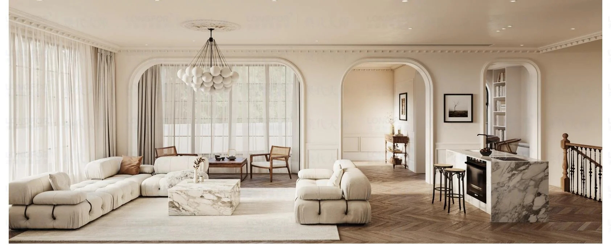
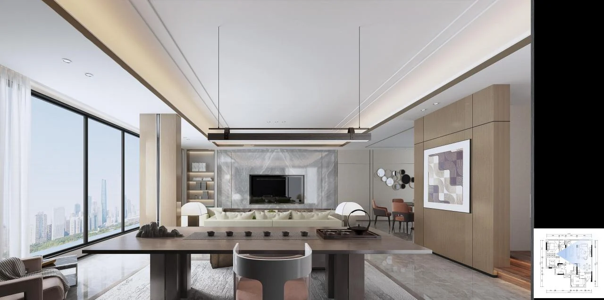
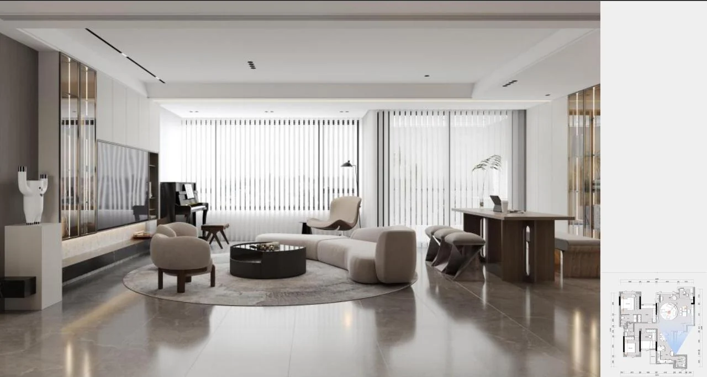

住巢氏围绕室内空间 建筑空间与园林景观开展设计实践 以克制清晰的语言回应功能 材料与日常使用
住巢氏是由广东元启企业管理有限公司运营的设计品牌 业务涉及室内设计 建筑与空间设计 园林景观设计等领域
围绕住宅 商业 办公及其他室内空间进行空间规划 功能布局与设计
围绕建筑空间 空间关系与使用需求开展方案研究与设计
围绕园林 景观及室外空间开展环境与空间设计



本页面作为住巢氏公开品牌资料入口 保持简洁并用于品牌与设计业务信息展示